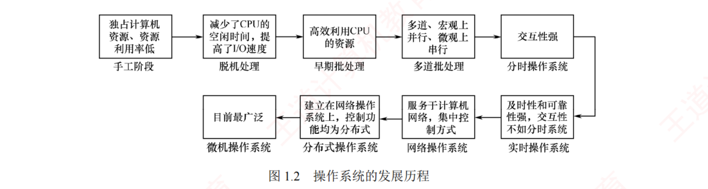
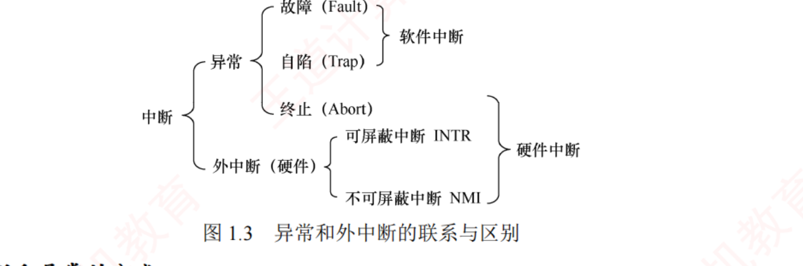
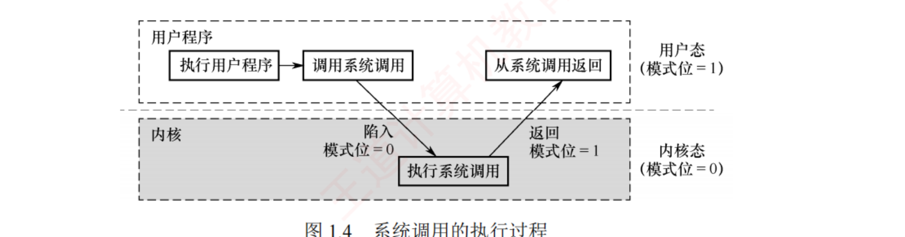
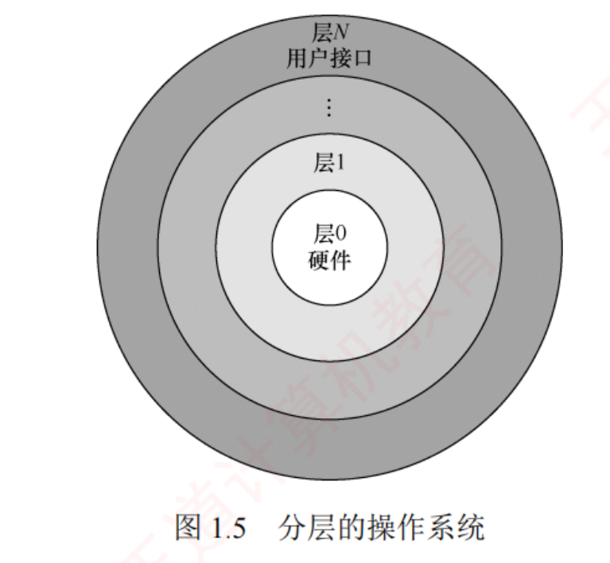
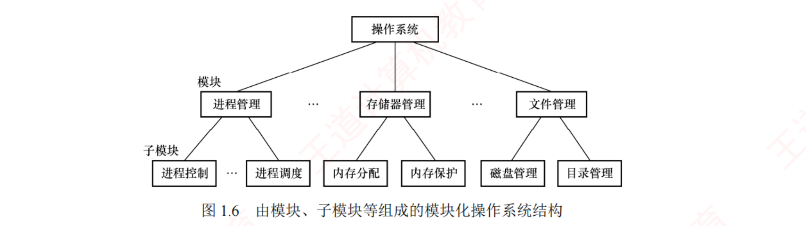
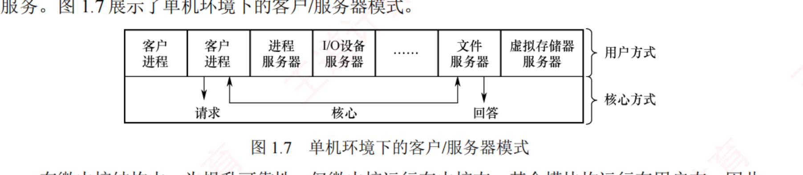
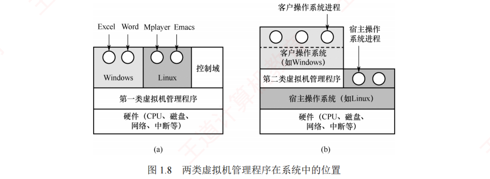

← 返回 408 复盘中心
怎么读这一页： 正文是书上的内容，我只做了结构重排和取舍 。色块分两个维度——① 按来源：
必记结论 （书上的考点句）、
我的补讲 、
陷阱 。② 按动作：
背景 · 考试不碰 ——虚线灰块，明确告诉你哪几段可以快速划过 ；
知识串联 ——绿块，就地标出这里和后面哪一章、和《组成原理》《数据结构》哪个概念是同一件事 。📄 p.N 点开跳到原书对应页；紫色 考点追踪 是王道标注的真题年份。⚠️ 本章的读法：36 页里，1.3 一节（11 页）占了全章 27 道真题中的 18 道。
1.3 的真题密度是 1.64 道/页 —— 这是我做完数构八章、组原七章之后，四科所有章节里见过的最高密度
（组原最高的 6.2 节是 1.14/页）。读到 1.3 请把速度降下来，那 11 页值得反复读三遍；1.1/1.2 快读，1.4–1.6 中速。 本章几乎全考选择题，但选择题考的是「词」 ——「发生」和「执行」、「一定」和「可能」、
「所有」和「部分」、「响应」和「处理」，差一个字答案就翻面 。我在正文里把这些词都加粗了。
📄 p.1
本章定位
我的补讲 · 这一章的 88 道题该怎么刷（先看分布再动手）
我把本章 88 道题按节数了一遍，题量分布和真题分布严重不成比例 ：
节 题量 真题 建议 1.1 基本概念 11 1 快刷，错了看"库函数 vs 系统调用"那一条 1.2 发展历程 22 4 快刷；两道甘特图大题必须动笔画 1.3 运行环境 33 18 逐题过，错题全部进错题本重刷 1.4 结构 10 1 中速；只要不把五种结构的标签贴错就不会丢分 1.5 引导 5 0 背七步链条即可 1.6 虚拟机 7 3 中速；2025 刚考过，注意 VMM 特权级
⟹ 刷题顺序建议：先 1.3（33 题）→ 再 1.4/1.6 → 最后回头扫 1.1/1.2。
理由：1.3 一节占了全章 2/3 的真题，先把最贵的啃下来，后面即使时间不够也不亏。 考纲内容 ：（一）操作系统的基本概念。（二）操作系统的发展历程。（三）程序运行环境 ：CPU 运行模式（内核模式与用户模式）；中断和异常的处理；系统调用；程序的链接与装入；程序运行时内存映像与地址空间。（四）操作系统结构：分层、模块化、宏内核、微内核、外核。（五）操作系统引导。（六）虚拟机。
王道的复习提示 ：本章通常以选择题 的形式进行考查，要求考生在宏观上把握操作系统的整体架构，在微观上掌握关键概念与核心机制。作为全书的导引章节，本章有助于构建对操作系统的整体认知框架，为后续深入学习进程管理、内存管理、文件系统等核心内容奠定基础。
我的补讲 · 考纲里有两个考点不在本章 ，别在这儿找
考纲（三）列的五个考点中，「程序的链接与装入」与「程序运行时内存映像与地址空间」 被书上一个脚注打发掉了：
「这两个考点将在第 3 章的 3.1 节中介绍」 。潜台词是：它们本质上是内存管理问题，
放在这里讲你没有地址空间的概念，讲不动。 所以本章真正要吃透的只有三件事：
① 双重工作模式（用户态/内核态）② 中断与异常 ③ 系统调用 ——而这三件事恰好就是 1.3 节。
我的补讲 · 本章的地图（先看这个再往下读）
书上分成 1.1–1.7 七节，但从
出题 的角度只有
三块 ：
块 节 页 真题 该怎么读 概念热身 1.1 基本概念 14 5 快读。四特征、三类系统的目标、多道的三特点，会做辨析题即可 ⭐ 运行环境 1.3 11 18 逐句读 。态、中断、系统调用三件事，2011–2024 每年必考 结构与引导 1.4 结构 9 4 中速。五种结构的标签别贴错 ；引导链背顺序
⟹ 时间怎么分配：如果只有 3 小时读这一章，请给 1.3 至少 90 分钟。
它一节的真题量（18 道）比全章其余六节加起来（9 道）还多一倍。 知识串联 · 本章是四科的接线盒
第 1 章看起来最"虚"，实际上它是 408 四科交汇最密的一章。先把这五条线记在心里，
后面每遇到一条我会就地再点一次：中断 组原 ch7「程序中断方式」＝本章 1.3 的硬件实现；OS ch5「I/O 控制方式」再用一遍。用户态/内核态 组原 ch5「异常和中断」讲的断点、现场、中断隐指令，本章 1.3 全部要用。中断向量表 2023 真题问它的数据结构（数组）—— 直接考的是数据结构 ch2 顺序表 O(1) 随机存取 。虚拟 本章 1.1 的"虚拟"特征 ＝ OS ch3 虚拟存储器 ＋ ch5 SPOOLing ＋ 组原 ch3 虚存，是同一个思想。并发 本章的并发/共享，是 OS ch2 全部 P/V 问题的出发点。
1.1 操作系统的基本概念
知识串联 · 1.1 的四个特征，分别是后面哪一章的"总纲"
四特征
特征 它在后面变成什么 并发 ch2 全章：进程/线程的引入、状态转换、调度 —— 书上原话"引入进程的核心目的之一就是支持程序的并发执行" 共享 ch2 同步与互斥：临界资源 → 临界区 → P/V → 死锁虚拟 ch3 虚拟存储器（空分复用）＋ ch5 SPOOLing（虚拟设备）异步 ch2 "与时间相关的错误"＝同步机制存在的全部理由
⟹ 四个特征不是四个名词，是全书的目录。背它们时顺手把"它在哪一章展开"一起记，
后面学到那儿会省一半力气。 📄 p.1
1.1.1 操作系统的概念
知识串联 · "裸机 → 扩充机器"与组原的"虚拟机器层次"是同一句话的两种说法
扩充机器 OS 说：裸机被 OS 抽象扩展成功能更强、使用更便捷的逻辑机器（扩充机器） ；
组原 ch1 说：操作系统机器（M2）向上提供一级"广义指令"（系统调用），把 M1 传统机器封装起来 。两句话说的是同一件事：OS 在硬件之上造了一台"看起来更好用的机器"，
而这台机器的"指令集"就是系统调用 。
⟹ 这也解释了组原为什么把系统调用叫"广义指令"——在 M2 那一层，它就是指令。
我的补讲 · 定义里那五个字「最基本的系统软件」是考点
书上定义的落脚点是"最基本的 系统软件"，不是"系统软件"——这个限定词能直接判掉两类干扰项： 编译器、数据库管理系统、网络管理工具也都是系统软件 ，但它们跑在 OS 之上，不"最基本" ；OS 是唯一"没有它别的软件一个都跑不起来"的软件 ——这就是"最基本"的操作性含义。⟹ 1.1 节有三道题（题 03「编译器不是 OS 关心的问题」、题 09「OS 不是用来编程的程序」、
1.3 节题 01 说法 Ⅲ「OS 需要提供编译器」）全靠这一条判定。
它们本质是同一个问题：谁是地基，谁是盖在地基上的房子。
必记 · 定义（原文，能默写）
操作系统（Operating System，OS）是控制和管理计算机系统软/硬件资源、合理调度任务与分配资源，
并为用户及其他软件提供统一接口与运行环境的最基本的系统软件 。
从使用层次看，计算机系统自下而上分为四层：硬件 → 操作系统 → 应用程序 → 用户 。硬件（CPU、内存、I/O 设备）提供基本计算资源；应用程序（文字处理、电子表格、编译器、浏览器）利用这些资源解决用户的实际问题；操作系统负责管理硬件资源、为应用程序提供运行环境、充当硬件与用户之间的桥梁 。
知识串联 · 这个"四层"和组原的"五层"不是一回事
层次结构 书上特意加了一句
「该划分侧重人机交互视角，不同于计算机组成原理中的结构分层 」 ，
这句话不是废话：
组原 ch1 的层次（按"谁执行这级语言"分） OS ch1 的层次（按"谁用谁"分） M4 高级语言 → M3 汇编 → M2 操作系统机器 → M1 传统机器 → M0 微程序 用户 → 应用程序 → 操作系统 → 硬件 关心的是翻译与解释 （编译/汇编/解释） 关心的是调用与服务 （谁向谁请求）
两张图里 OS 都在中间，但一张说的是"OS 提供一级虚拟机器语言"，另一张说的是"OS 提供服务"。
选择题若问"计算机系统的层次结构"，先看是哪一科的题。 📄 p.2
1.1.2 操作系统的功能和目标
知识串联 · 四大管理各自的"跨科对口单位"
四大管理 OS 的四大管理不是凭空来的，每一项在组原里都有对应的硬件：
OS 的管理 管的硬件（组原对应章） 典型的"软硬配合点" 处理机管理 组原 ch5 CPU 进程切换 ⟸ 组原的现场保存/恢复、PSW 存储器管理 组原 ch3 存储系统 地址映射 ⟸ 组原的虚存页表、TLB （同一套机制） 设备管理 组原 ch7 I/O 系统 I/O 请求 ⟸ 组原的中断、DMA、通道 文件管理 组原 ch3 外存（磁盘） 存储空间管理 ⟸ 磁盘的柱面/磁道/扇区 寻址
⟹ 这也解释了为什么 408 把这两科放在一起考：OS 讲的是"怎么管"，组原讲的是"管的是什么"。 必记 · 四大核心功能（＝全书四条主线）
处理机管理 · 存储器管理 · 设备管理 · 文件管理 ；此外提供
用户接口 ，并通过
抽象与虚拟化 扩充硬件功能。
功能 做什么（书上原话浓缩） 在哪一章展开 处理机管理 分配与运行以进程（线程）为基本单位 ⟹ 本质上是对进程的管理 ；含进程控制、同步、通信、死锁处理、调度 第 2 章 存储器管理 内存分配与回收、地址映射 、内存保护与共享、内存扩充 第 3 章 文件管理 文件存储空间管理、目录管理、读/写、访问保护（负责这部分的叫文件系统 ） 第 4 章 设备管理 处理 I/O 请求、屏蔽设备差异 、缓冲管理、设备分配、驱动、虚拟设备 第 5 章
我的补讲 · 这张表就是全书目录，别把它当"概述"划过去
书上说 OS 有四大管理功能 → 潜台词是：这四个词就是后面四章的章名 → 所以能考的是
「某个具体动作归哪一类管理」。 比如：「地址映射」属存储器管理 （不是设备管理）、
「缓冲管理」属设备管理 （不是存储器管理，虽然缓冲区在内存里）、
「死锁处理」属处理机管理 （不是"资源管理"这种不存在的分类）。
2019 真题（练习 1.3-26）说法 Ⅱ「OS 通过提供系统调用避免用户程序直接访问外设」，
判它对的依据就是"设备管理属于 OS 的职能之一"。
我的补讲 · 「雇主-工人」比喻的三条对应要背下来
书上举了个例子：用户＝雇主，计算机（处理机、存储器、设备、文件）＝机器，OS＝工人。
它不是文学修辞，而是三个考点的助记：
比喻里的动作 对应 OS 的哪一面 常见考法 工人协调控制各部件工作 资源的管理者 "OS 的基本功能是什么"⟹ 控制和管理资源 工人接收雇主命令并执行 用户接口 命令接口 vs 程序接口的区分 复杂机器变得简易好用 扩充机器 （裸机 → 虚拟机）"裸机""扩充机器"的定义题
图 1.1 操作系统作为用户与硬件系统之间的接口（p.2）——注意 OS 那一层被画成三个入口：系统调用 / 命令 / 图形窗口 。左边的「系统调用」直通应用程序 ，右边的「命令」「图形/窗口」直通用户 ：这就是"程序接口"与"用户接口"的分野，一图定两类接口。
必记 · 两类接口（本节最高频考点）
用户接口 （面向普通终端用户）＝ ① 联机用户接口 （命令行接口，键盘命令 + 命令解释程序，输入一条立即执行并返回控制权，适用于实时交互 ）
② 脱机用户接口 （作业控制语言 ，用于批处理系统 ，作业控制命令写入作业说明书连同作业一并提交，无须用户实时干预 ）
③ 图形用户接口 GUI （图标菜单对话框，底层仍通过系统调用与内核交互 ）。程序接口 （面向应用程序）＝ 系统调用 ，是应用程序运行时请求 OS 服务、访问系统资源的唯一合法途径 。
陷阱 · 库函数 ≠ 系统调用（ch1 考了四次的同一刀）
考点追踪 · 2010
书上原话：
「库函数本身并非操作系统接口，它们只是对系统调用的封装 。」
库函数 会不会进内核 怎么进 printf()会 最终通过 write 系统调用输出 malloc()可能会 需要更多内存时调用 brk 或 mmap strlen()、sqrt()、sin()不会 纯计算，完全在用户空间跑完
⟹ 三个必答结论： ①
OS 提供给应用程序的接口"本质上仍是系统调用" （2010 真题正解）；
②
"所有库函数都依赖系统调用"是错的 （举 strlen 一个反例即倒）；
③
库函数可移植（换 OS 名字不变）、系统调用与 OS 紧耦合 。
知识串联 · 这个考点会一路考到 2013、2021
库函数 vs 系统调用 2013 真题 用 sin() 当选项问"哪个会切到内核态"（答：不会）；
2021 真题 用 random() 当选项问"哪个通过系统调用完成"（答：不是）。
十一年里同一个坑挖了两次，用的都是"纯计算类库函数"。
⟹ 见到 sin/cos/sqrt/strlen/random/abs 这类函数，一律判定为"不进内核" 。
📄 p.3
背景 · 考试不碰
1.1.2 的第 3 小节「操作系统实现了对计算机资源的扩充」整段可以快读 ：裸机 → 扩充机器（虚拟机）
这套说法只在选择题里以"裸机""扩充机器"两个名词出现，且书上自己就写了
「关于接口与扩充机器的概念，读者只需理解其基本思想即可」 。记住两句：
未安装任何软件的计算机称为裸机；被 OS 抽象和扩展后的机器称为扩充机器。 其余不必细读。
1.1.3 操作系统的特征
我的补讲 · 三类用户接口的"信号词"（选择题靠认词）
书上的三类用户接口，考试从不问定义，只给场景让你认：
题干里出现 指的是 为什么 「输入一条命令、立即执行并返回结果 」「实时交互」 联机用户接口 （命令行）雇主说一句、工人做一件、并做出反馈 「作业说明书 」「作业控制语言」「一并提交」「无须实时干预」 脱机用户接口 用于批处理系统 ：预先写好清单，工人照单全做 「图标、菜单、对话框」「鼠标」 GUI 底层仍然 是系统调用，只是换了皮 「在程序中 」「读某文件的第 100 个逻辑块」 程序接口＝系统调用 人敲不出来，只能写进代码
⟹ 1.3 节题 15 就是最后一行的原题：「用户在程序中 试图读某文件的第 100 个逻辑块」⟹ 系统调用。 必记 · 四大基本特征
并发（Concurrency）· 共享（Sharing）· 虚拟（Virtual）· 异步（Asynchronism） 。
其中并发与共享是两个最基本 的特征，二者互为前提。
必记 · 并发 vs 并行（全章复现率第一）
考点追踪 · 2009 并发 ＝ 两个或多个事件在同一时间间隔内 发生；并行 ＝ 在同一时刻 真正同时发生。 并发而非并行 ；
但 CPU 与 I/O 设备之间、多个 I/O 设备之间可实现真正的硬件并行 ；
要实现进程级别 的并行，需多核 CPU 或多处理机等硬件支持。
我的补讲 · "并行"这个词在 408 里分两层 ，考题全卡在这条缝上
书上说"单处理机上只有并发没有并行"，但同一页又说"CPU 与 I/O 设备之间可实现真正的硬件并行"——
两句话不矛盾，因为说的是两个层次：
层次 单 CPU 上能否并行 哪道题考它 进程与进程 不能 （必须多处理器）1.2 节题 14：能使多个进程并行的是多处理器系统 CPU 与外设 能 （中断方式下 CPU 与外设真并行）2016 真题 ：中断技术使 I/O 设备可与 CPU 并行工作 ✔2018 真题 ：多任务 OS"具有并发和并行的特点"✔，但"必须多 CPU"✘
⟹ 潜台词：命题人知道你会背"单 CPU 只有并发"，所以专门用"CPU 与外设并行"来反打。
做题时先问：题里说的是谁和谁 并行。 必记 · 共享的两种形式
互斥共享 ：一段时间内只允许一个进程访问 的资源称为临界资源 （打印机、磁带机，以及软件中的栈、变量、表格 ）。同时访问 ：允许多个进程宏观上"同时"访问，此处"同时"通常指逻辑上的并发访问 ，微观上可能是分时交替（即分时共享 ）。典型：磁盘上的只读文件 ；用重入代码 编写的程序也可被多进程并发调用。
我的补讲 · "并发与共享互为前提"是怎么回事
书上给了两条理由，它们其实是一个循环，抄下来直接能当简答题写： 资源共享以程序的并发执行为前提 ——若系统只支持单道程序，一个时刻只有一个程序在跑，压根不存在"共享"这回事 ；有效的资源共享机制是并发执行的基础 ——若无法协调资源访问，并发程序会因竞争冲突而无法正确运行。⟹ 潜台词：这两条正是第 2 章存在的理由。 ch2 的 P/V 操作、临界区、死锁，
全部是在回答"② 怎么做到有效共享"这半句。本章埋的问题，第 2 章整章在解。
知识串联 · "虚拟"的两类复用，四科都在用
空间换时间 · 虚拟 书上把虚拟分成
时分复用 与
空分复用 两类，
这两个词你在 408 里会见到至少六次：
复用方式 OS 里的例子 别处的同一件事 时分复用 处理器的分时共享（每个用户仿佛独占一个 CPU） 组原 ch6 总线的分时复用 ；网络的时分多路复用 TDM 空分复用 虚拟存储器 （有限物理内存 → 更大的逻辑地址空间）组原 ch3 虚拟存储器 （同一套页表机制） 虚拟设备 SPOOLing ：把独占的打印机变成多台逻辑设备OS ch5 会展开；它把临界资源变成了共享资源
必记 · 异步（最短但最要紧的一条）
进程并非连续进行，而是以不可预知的速度 断续推进 ⟹ 进程的异步性。
异步性使 OS 运行于高度不确定的环境；若对共享资源的访问缺乏协调，可能导致与时间相关的错误 。
但在程序正确使用 OS 提供的同步机制的前提下，执行结果的正确性与可再现性能够得到保障。
我的补讲 · 四特征之间的层级关系（这才是考点）
四个特征不是并列的四条，2022 真题就考了它们的层级：
必需 并发
必需 共享
手段 虚拟
后果 异步
2022 真题 问"多道程序系统的说法哪个
不正确 "，选项 B 说"
不必支持虚拟存储管理 "——
这是对的 ：早期多道批处理把进程数据全部调入主存，没有虚存照样并发。
⟹ 潜台词：并发和共享是"一定要实现"的，虚拟和异步不是门槛。
背四特征时若把它们背成平级的四条，这道题必错。 陷阱 · 1.1 节最容易被张冠李戴的三组词
① 「同一时刻」＝并行，「同一时间间隔」＝并发 ——选项常把两个定义对调；「临界资源」是资源，不是代码 ——访问临界资源的那段代码叫临界区 （ch2 才正式出现），别混；OS 的管理对象是"计算机资源"（软+硬），不是"硬件" ——文件不属硬件但属计算机资源；
而源程序的内容语义 又不归 OS 管（归编译器）。同一份文件，OS 管它的壳、不管它的瓤。
1.2 操作系统发展历程
我的补讲 · 1.2 的 4 道真题全落在同一个点上
2016、2017、2018、2022 —— 四道真题，考的都是"多道/批处理/多任务的特点"，且四道题的错项造法只有两种：
造法 例子 ① 把别的系统的特点安过来 2016 Ⅰ：说批处理"允许多个用户直接交互"（那是分时的） ② 把"代价"说成"好处"，或把收益说成无限 2017 Ⅱ：多道"系统开销小"（实际更大）
⟹ 应对：读到"多道程序系统的优点/特点"类选项，先在心里过一遍
「多道＝拿开销换利用率」 这句话，凡是说"没有代价""越多越好""还更省"的，直接判错。
2018 那道是唯一的例外——它考的是"并发与并行"，属于 1.1 的内容跑到 1.2 来考。 📄 p.7
我的补讲 · 这一节按"每一代补上一代的短板"读，两分钟就串起来
书上按时间顺序讲了七种系统，但真正要记的是因果链 ，不是年表：
阶段 它解决了上一代的什么问题 它自己留下什么问题 手工操作 — 用户独占全机、CPU 长时间空闲等人 脱机 I/O 用外围机代替人工，减少 CPU 空闲 主机仍是单道，一道作业 I/O 时 CPU 还是干等 单道批处理 作业自动连续 执行（监督程序） 内存仅一道 ，I/O 时 CPU 依旧空闲多道批处理 内存驻多道，靠中断切换 ⟹ 利用率/吞吐量大增缺乏交互能力 ，响应慢分时 时间片轮转 ⟹ 人机交互 不保证时限 （平均快，但没有截止期保证）实时 按紧迫性/截止时间调度 ⟹ 确定性 牺牲资源利用率
⟹ 一句话记法：手工「等人」→ 脱机「等机」→ 单道「等 I/O」→ 多道「不等了但没法插话」→
分时「能插话但不保时」→ 实时「保时但费资源」。 1.2.1 手工操作阶段（未配置操作系统）
我的补讲 · 「脱机」这个词在 408 里出现三次，判据只有一个
判据：这件事做的时候，主机（CPU）参不参与 ？不参与＝脱机，参与＝联机。
出现处 脱机指什么 本节：脱机 I/O 由外围机 完成纸带↔磁带的搬运，CPU 不参与 1.1 节：脱机用户接口 作业控制语言 ：命令预先写好，运行时用户不参与 ch5：SPOOLing（假脱机） 用磁盘 + 输入/输出井 模拟外围机，把独占设备变共享设备
⟹ 注意第三条的"假"字：SPOOLing 叫假 脱机，因为搬运工作其实还是主机在做，
只是用磁盘缓冲把慢速设备"藏"了起来。ch5 会专门考这个词的由来。 背景 · 考试不碰细节，只留两个缺点
纸带穿孔、人工装入、外围机型号……这些都不考。只记两条 ：手工操作阶段的两个突出缺点是
① 用户独占全机、资源利用率极低；② CPU 长时间空闲等待人工完成 I/O。
脱机 I/O 的定义要会分辨：I/O 由外围机独立完成、脱离主机直接控制 ＝ 脱机；由主机直接管理 I/O ＝ 联机。
1.2.2 批处理阶段
我的补讲 · "监督程序"就是操作系统的第一个雏形
书上说单道批处理要"配备一个监督程序（Monitor）"，一句带过。它值得多看一眼：
监督程序是历史上第一段"为了管别的程序而存在的程序"——在它之前，机器上跑的每一行代码都在解用户自己的问题。 ⟹ 从这里开始，"作业调度"（从磁带上取下一道作业）第一次成为一项系统职能 。
这条线一直延伸到 ch2 的三级调度：作业调度（高级）→ 内存调度（中级）→ 进程调度（低级） ，
而单道批处理的监督程序干的正是最原始的"高级调度"。
陷阱 · 两个「顺序性」不是一回事
单道批处理的三特征里有"顺序性"，而 1.2 节题 03 又说多道程序失去 了"顺序性"——不矛盾，因为层次不同：
说的是什么 单道批处理的顺序性 作业级 ：磁带上的作业按顺序装入，先装入者先完成 多道失去的顺序性 程序内部执行级 ：并发后程序失去封闭性和顺序性 ，执行是断续的
⟹ 多道程序引入后新增的三个特征是制约性、间断性、共享性 （题 03 的 A、B、D），
被丢掉的是封闭性、顺序性、可再现性 。后三者要靠 ch2 的同步机制人为找回来。 📄 p.8
必记 · 单道批处理的三特征 · 多道程序设计的三特点
考点追踪 · 2016 · 2017 · 2022 单道批处理三特征 ：自动性 （磁带上的作业自动连续执行，无须人工干预）·
顺序性 （按磁带顺序装入，先装入者先完成）· 单道性 （内存中仅一道 用户程序）。多道程序设计三特点 ：多道 （内存同时驻留多道相互独立的程序）·
宏观上并行 （多道程序均处于运行过程中，但尚未全部完成）· 微观上串行 （各程序轮流占用 CPU）。多道要解决的四个关键问题 ：处理器分配策略 · 内存分配与保护 · I/O 设备分配与调度 · 数据的组织与存储。
必记 · 多道批处理的优缺点（考了 2016/2017/2022 三年）
优点 ：资源利用率高（共享 CPU、内存、I/O），系统吞吐量大 。缺点 ：缺乏交互能力 ——用户无法了解程序运行状态或进行干预，响应时间较长。关键机制 ：该机制依赖中断技术 ，使系统各部件尽可能保持忙碌。
陷阱 · 三道真题的三个错项，全是同一个模子
2016（Ⅰ） 「批处理系统允许多个用户与计算机直接交互」✘ —— 把分时 的特点安给批处理；2017（Ⅱ） 「多道程序系统系统开销小 」✘ —— 多道要额外付出组织作业、切换作业 的开销；2022（D） 「进程数越多，CPU 利用率越高」✘ —— 进程越多资源竞争越激烈，甚至死锁 ，利用率反降。⟹ 三条合成一句：并发是"拿开销换利用率"的买卖，收益有上限。
凡说"多道无代价""越多越好"的，一律错。
知识串联 · 2022 那个 D 选项，其实是 ch3「抖动」的预告
多道程序度 "进程数越多 CPU 利用率越高"为什么错？ch3 有个专名叫抖动（thrashing） ：
进程太多 ⟹ 每个进程分到的页框太少 ⟹ 缺页率飙升 ⟹ CPU 全在等 I/O ⟹ 利用率先升后降 。
ch3 会画出那条著名的"驼峰曲线"，横轴就是多道程序度。本章这道 2022 真题，是那条曲线的第一次露面。
1.2.3 分时操作系统 1.2.4 实时操作系统
知识串联 · 时间片这个概念，ch2 会算到你手软
队列与调度 本节只给了 T ≈ QN 一个公式，但"时间片"这个东西在 ch2 的 2.2 CPU 调度 里是主角：
时间片轮转（RR） 算周转时间与带权周转时间、多级反馈队列 里时间片逐级加倍……本节埋的那条权衡要先记住：Q 太大 ⟹ 退化成 FCFS、响应慢；Q 太小 ⟹ 上下文切换开销占比升高。
ch2 会把这条权衡变成计算题；本章只考它的定性方向（1.2 节题 09 的 A"加大时间片"就是拿这条设的卡）。
📄 p.9
必记 · 分时四特征 + 那个公式
同时性（多路性）· 交互性 · 独立性 · 及时性。 分时 vs 多道批处理的本质区别：后者追求高吞吐与资源利用率、无须人工干预；前者以人机交互为核心目标 。 响应时间 T ≈ Q × N （Q＝时间片，N＝用户/就绪进程数）。
⟹ 就绪进程 100、要求响应不超过 2s ⟹ 时间片最大 2s/100 ＝ 20ms。
必记 · 实时系统
为在严格的时间限制内 完成关键任务而设计；摒弃了分时的时间片轮转，改用基于任务紧迫性或截止时间 的调度策略。 硬实时 ：必须在截止时间前完成，否则灾难性后果（飞机控制、导弹制导）；
软实时 ：允许偶尔错过，只要不造成永久性损害（飞机订票、银行系统）。主要特点：确定性（响应时间可预测）、高可靠性、强时效性。
我的补讲 · 三代系统的目标，一句口诀锁死三道题
书上分别在三处写了三种系统"追求什么"，考题反复在这三点上打转（1.2 节题 06、题 10、题 15 全是它）：
批处理 要「多」
分时 要「快」
实时 要「准」
⟹ 由此秒杀一类题：「资源利用率是不是实时系统的主要目标」——不是。
书答里那句话值得抄下来：
「为了保证快速处理高优先级任务，允许"浪费"一些系统资源 」 。
实时系统常年预留空闲 CPU、预分配内存、禁用换页 —— 拿资源换确定性，这是它的设计哲学。 我的补讲 · "改善响应时间"那道题为什么选"优先级 + 非抢占 "
1.2 节题 09 的四个选项里，只有 C 与响应时间有因果关系。但为什么是"非抢占"而不是"抢占"？ 纯抢占式下低优先级进程可能长期饥饿，它的响应时间会被拖成无穷大；
非抢占保证每个已上 CPU 的进程能跑完一段，把最坏 响应时间兜住。
题问的是"系统的响应时间"（含最坏情形），不是"高优先级进程的响应时间"。
⟹ 这条思路在 ch2 讲调度算法（尤其多级反馈队列如何防饥饿）时会原样再用一次。
1.2.5 网络操作系统和分布式系统 1.2.6 微机操作系统
我的补讲 · 网络 OS 与分布式 OS，一句话判据
判据：用户需不需要知道"东西在哪台机器上" 。
用户视角 关键词 网络 OS 要显式指定远程资源的位置 （\\\\192.168.1.5\\share） 无全局视图 · 各机独立运行 分布式 OS 感觉像在用一台机器 ，不知道任务跑在哪个节点透明性 · 单一系统映像 · 节点对等
⟹ 记住"透明"这个词：408 里凡说"对用户透明"，都是指用户感觉不到它的存在
（虚拟存储对用户透明、Cache 对程序员透明、分布式的多机结构对用户透明）。
"透明"＝看不见，不是"看得清"——这是中文最容易反着理解的一个术语。 必记 · 网络 OS vs 分布式 OS（一句话的差别）
网络 OS ：仅实现资源共享与通信，各计算机保持独立运行，用户需显式指定远程资源的位置 才能访问，系统不提供统一的全局视图。 分布式 OS ：节点地位对等、无固定主从关系 ；资源被透明地 共享；核心特点分布性、并行性、透明性 ——
透明性尤为关键，用户无须感知底层多机结构，向用户提供单一系统映像 。
背景 · 考试基本不碰
1.2.6 微机操作系统的三分类 （单用户单任务＝MS-DOS · 单用户多任务＝Windows/macOS/Linux 桌面 · 多用户多任务＝UNIX/Linux 服务器版/Windows Server）
只在"辨认系统类型"这种送分题里出现 （如 1.2 节题 13 的第四空"IBM-PC 中的 OS"＝微机 OS）。
知道有这三类、能对号入座即可，不必记具体产品年代。

图 1.2 操作系统的发展历程（p.10）——一张图串起全节 ：手工阶段（独占、利用率低）→ 脱机处理（减少 CPU 空闲、提高 I/O 速度）→ 早期批处理（高效利用 CPU）→ 多道批处理（多道、宏观上并行、微观上串行） → 分时（交互性强）→ 实时（及时性和可靠性强，交互性不如分时 ）→ 网络 OS（服务于计算机网络，集中控制）→ 分布式 OS（控制功能均为分布式 ）→ 微机 OS（目前最广泛）。图里每个方框上的短句就是该系统的"标签"，选择题的正解常常就是抄的这几个字。
我的补讲 · 两道甘特图大题：本章仅有的"要动笔"的题
1.2 节末尾两道综合应用题（练习系统
1.2-21 / 1.2-22 ）是全章唯一需要画图计算的，
而它们的解题规矩只有一条：同一台设备（CPU / 打印机 / 输入设备）在任一时刻只能被一个程序占用，后到的排队。
题 结论（我用 Python 排程独立复算过，与书图逐段吻合） 综 01 单道 40/80 ＝ 50%；多道 40/45 ≈ 88.9% 。注意 A 在 15–20s 是在等 CPU （B 占着），漏掉这段就会把总时间算成 40s综 02 CPU 空闲区间只有 [100,150]ms，利用率 250/300 ≈ 83.3% ；A 无等待；B 有两段等待：[0,50] 与 [180,200]
⚠️ 三个高频失分点： ①
把"CPU 空闲"与"进程等待"混为一谈 （0–50ms 时 CPU 满载但 B 在等；100–150ms 时无人等 CPU 但 CPU 闲着）；
②
漏掉 B 的第二段等待 （输入 180ms 完成，但 CPU 被 A 占到 200ms）；③
利用率的分母永远是"全部结束的总时长" 。
知识串联 · 甘特图里那两种"等"，就是 ch2 的两种状态
进程状态 综 02 里进程 B 的两段"等"，在 ch2 里有不同的名字：[0,50] 等 CPU ＝ 就绪 态 （万事俱备，只差处理机）；[100,180] 等输入完成 ＝ 阻塞 态 （等的是 I/O，就算给它 CPU 也没用）。
甘特图上这两段长得一模一样，在 ch2 的三态转换图里却是完全不同的两个圈 ——
这也是为什么"就绪 → 运行"由调度器决定，而"阻塞 → 就绪"必须等外部事件。
1.3 操作系统的运行环境 ⭐ 全章重心（11 页 / 18 道真题 / 1.64 道每页）
我的补讲 · 这 11 页建议读三遍，每遍带着不同的问题
1.3 的信息密度太高，一遍读下来一定是"字都认识、题还是错"。我建议这样分三遍：
遍 带着什么问题读 读完要能答出 第 1 遍 "这件事在哪一态？" 每个名词（陷入指令、I/O 指令、Shell、缺页处理程序…）都能贴上"用户态/内核态"的标签 第 2 遍 "这一步是谁做的？" 把中断响应到返回的每一步分给硬件 或OS ，一步不漏 第 3 遍 "这是中断还是异常？返回到哪？" 缺页、除零、时钟、I/O 完成、访管、掉电，六个例子分类＋返回位置全对
⟹ 这三个问题正好对应 1.3 的四条分界线中的前三条（第四条"指令属于哪一态"包含在第 1 遍里）。
三遍读完再去做那 33 道题，正确率会有质的差别。 📄 p.15
我的补讲 · 先给这一节的"四条分界线"，读正文时对号入座
1.3 的 18 道真题，无一例外落在下面四条缝上。读之前先记住这四句，读的时候就是在给它们填证据：
# 分界线 哪些年考过 ① 「在用户态发生 」vs「在用户态执行 」 ——系统调用、外中断、缺页都发生 在用户态、处理 在内核态；只有进程切换连"发生"都在内核态 2012 · 2024 ② 硬件做的 vs OS 做的 ——断点 PC/PSW、改模式位＝硬件 ；通用寄存器、中断屏蔽字、服务例程、初始化向量表＝OS 2015 · 2020 · 2022 ③ 中断（外，返回第 i+1 条）vs 异常（内，返回第 i 条重执行 ） ——「缺页中断」名字带中断、分类却是异常 2013 · 2015 · 2016 ④ 指令属于哪一态 ——陷入/访管指令在用户态 执行；关中断、I/O 指令、置时钟、停机在内核态 2014 · 2021 · 2022
1.3.1 操作系统内核
我的补讲 · 内核里为什么装的是"这四类东西"
书上列了内核该装什么，但没说为什么。归纳起来只有两条理由：
装进内核的东西 理由 中断处理程序、设备驱动 与硬件紧密相关 ——必须能执行特权指令时钟管理、进程调度 运行频率极高 ——放外面每次都要跨态，太慢原语 要求原子性 ——只有内核能关中断PCB、设备控制块、内存分配表 全局共享的核心数据结构 ——放用户态会被改坏
⟹ 反过来，凡是"既不碰硬件、又不常跑、也不需要原子性"的功能，都可以移出内核 ——
这正是 1.4 节微内核的全部依据（文件系统被移出去，就是因为它三条都不占）。 必记 · 内核里装了什么、为什么装在这
内核＝把与硬件紧密相关的模块 （中断处理程序、设备驱动）、运行频率较高的模块 （时钟管理、进程调度）、
以及各模块共用的基础操作，集中放在紧靠硬件的层次并常驻内存 。两个设计目的：① 保护核心模块免受应用程序破坏；② 提升运行效率。 支撑功能 ：时钟管理 · 中断机制 · 原语。系统资源管理功能 ：进程管理 · 存储器管理 · 设备管理。
必记 · 原语（三个字：原子性）
原语＝由若干条指令组成、用于完成特定功能的操作，具有原子性 ——执行过程不可被中断，必须一气呵成。
常见原语：进程切换、进程同步、资源分配 。为实现原子性，原语常通过关闭中断 等手段确保执行不被干扰。
我的补讲 · "原语靠关中断实现原子性"这句话，是理解全章的钥匙
书上说原语靠关中断保证不被打断 → 潜台词是：关中断是特权指令 （2014 真题的正解）→
所以原语一定在内核态跑 → 所以用户程序永远写不出原语。 反过来也成立：正因为"关中断"能让一段代码独占 CPU 直到跑完，它才必须是特权指令 ——
否则任何用户程序关一次中断，时钟中断进不来、调度器再也没机会运行，整个系统假死。
⟹ 同一件事，在内核手里是工具，在用户手里是灾难。这句话可以直接拿去答 2014 那道题。
知识串联 · 原语这个词，ch2 会天天见
原语 · 原子性 ch2 的进程控制 全部由原语实现（创建原语、撤销原语、阻塞原语、唤醒原语），
P/V 操作本身也是原语 。为什么必须是原语？ 因为"检查信号量的值"和"修改它"若被中断插进来，
就会出现两个进程同时通过检查的经典错误。本章这一段是 ch2 全部同步机制的前提。
必记 · 时钟管理（2018 真题原型）
考点追踪 · 2018 计时 + 产生定时中断 。分时系统靠时钟中断做时间片轮转、实时系统靠它控制截止时间、
批处理系统靠它衡量作业进度 ⟹ 系统的大量活动均依赖于时钟机制。 时钟中断服务程序更新的内容 ：内核中时钟变量的值 · 当前进程占用 CPU 的时间 ·
当前进程在时间片内的剩余执行时间 · 各种定时器 —— 2018 真题问哪些被更新，答案是"全都"。
📄 p.16
1.3.2 处理机的双重工作模式
知识串联 · 用户态/内核态在 ch2 进程切换里的样子
用户态/内核态 · 进程切换 一次完整的进程切换，态是这样走的：
进程 A用户态
时钟中断/系统调用硬件切内核态
调度器选中 B内核态
进程 B用户态
⟹ 由此可以直接答 2012 真题：进程切换"发生"在内核态。也可以理解 ch2 说的
"进程切换的开销包括模式切换 + 上下文切换 "——前者是态的来回，后者是 PCB 的存取。
⚠️ ch2 还会补一条本章没说的：用户态到内核态的切换（模式切换）不一定伴随进程切换 ——
系统调用完了通常还回到原进程。模式切换 ≠ 进程切换，这是 ch2 的高频陷阱。 我的补讲 · "系统引导时硬件从内核态开始工作"这句话的用处
书上这句容易被当成废话，其实它回答了一个很自然的疑问：既然进内核态要靠中断，
那开机时第一次是怎么进去的？ 答：根本不需要"进"——加电时 CPU 就在内核态，BIOS、引导程序、内核初始化全程都在内核态跑；
直到内核建好一切、启动第一个用户态进程（init）时，才第一次把模式位置 1 切到用户态。 ⟹ 所以整个开机过程的态变化是：内核态（一路到底）→ 用户态（init 启动）→ 此后在两态间反复横跳。
这也解释了 1.5 节为什么说"内核完全接管系统控制权、重建中断处理机制"——
接管的前提就是它一直握着最高权限。
必记 · 模式位与两类指令
考点追踪 · 2011 · 2012 · 2014 · 2021 · 2022 一个模式位 标识当前模式（书上例：0＝内核态，1＝用户态 ）。系统引导时硬件从内核态开始工作 ，加载完 OS 后切到用户态；一旦发生中断或陷阱，硬件自动 从用户态切到内核态（模式位置 0） ；
OS 一旦获得控制权就处于内核态；在把控制权交还用户程序前，切回用户态（模式位置 1）。 特权指令 ：仅内核态可执行，可访问全部地址空间 ，如启动外设、设置系统时钟、关闭中断、修改模式位、返回用户态 。非特权指令 ：用户态执行，内存访问被限制在用户地址空间 。用户程序试图执行特权指令 ⟹ 硬件产生非法指令异常 ⟹ OS 捕获后终止该程序。
我的补讲 · 一张表判定"这条指令属于哪一态"（1.3 考了 5 次的单点）
把书上散在三处的判据合成一张表，1.3 全部指令题都能套：
类别 典型指令 态 ① 直接管理系统资源 置时钟 · 启停外设 · I/O 指令 · 切换进程 · 设置中断 内核态 ② 修改系统状态 改中断向量表 · 改模式位 · 修改 PSW · 开/关中断 · 设置中断屏蔽字 ③ 系统控制 停机 · 重启 普通指令 算术逻辑 · 数据传送（存数/取数）· 转移跳转 · 压栈 · 寄存器清零 · 陷入（访管/Trap）指令 用户态
⚠️ 两个最容易判反的：
①
陷入指令在用户态执行 ——若它需要内核态才能执行，用户就永远进不去内核了（这是逻辑自洽性问题，不是死记）；
②
中断屏蔽字设置指令在内核态 ——推理链有点长：
屏蔽字寄存器 ∈ 中断控制器 ∈ I/O 接口 ⟹ 属 I/O 指令 ⟹ 特权。 陷阱 · 「管理员权限」不是「内核态」
1.3 节题 05 问特权指令只允许谁使用，选项里有"管理员""联机用户"。正解是"操作系统"。 「用户身份权限」（root vs 普通用户）由 OS 在软件层面判断；「CPU 特权级」（内核态 vs 用户态）由 CPU 的模式位判断、硬件强制。
root 用户跑的程序照样在用户态，照样执行不了特权指令 —— 它想改硬件，也得老老实实走系统调用。
知识串联 · 双重模式的硬件本体在组原
用户态/内核态 这个"模式位"在组原里有名有姓：它是 PSW（程序状态字寄存器） 里的一位。
组原 ch5「异常和中断」讲的：中断隐指令要保存 PC 和 PSW、中断响应时硬件自动改变模式 ——
与本节说的完全是同一件事，只是组原从硬件视角讲、OS 从软件视角讲。
⟹ 2015、2020、2022 这三道 OS 真题，用组原 ch5 的知识可以直接秒杀。
📄 p.16
1.3.3 中断和异常的概念
知识串联 · 中断是 408 四科最大的枢纽
中断 把四科里所有讲中断的地方并排列出来，你会发现它们讲的是同一件事的不同侧面：
科目 · 章 讲中断的什么 组原 ch5 异常和中断中断隐指令 （关中断、存断点、引出服务程序）· 断点返回位置 · 异常分类组原 ch7 I/O 方式中断请求 → 判优 → 响应 → 处理 → 返回 ；响应优先级 vs 处理优先级（屏蔽字） OS ch1 （本节）中断是进内核态的唯一途径 ；中断 vs 异常；硬件与 OS 的分工 OS ch2 时钟中断触发调度 ；中断是抢占式调度的前提OS ch5 I/O 控制方式：程序查询 → 中断驱动 → DMA → 通道
⟹ 如果只想投资一个概念让四科同时受益，就是"中断"。本节这 3 页值得多花半小时。 必记 · 三个层次的"能不能屏蔽"
① 可屏蔽中断（INTR 线） ：通过改变屏蔽字可实现多重中断 ，使中断处理更灵活 ⟹ 能屏蔽 。② 不可屏蔽中断（NMI 线） ：紧急的硬件故障，如电源掉电 ⟹ 不能屏蔽 。③ 异常 ：书上明写"此外，异常也是不能被屏蔽的 " ⟹ 不能屏蔽 。⟹ 一句话：只有"可屏蔽中断"能被屏蔽，NMI 和所有异常都屏蔽不掉。
书上的脚注 本节内容较精简，书上建议结合《计算机组成原理考研复习指导》相应小节学习。——如果你已经做完组原 ch5（异常和中断）与 ch7（程序中断方式），本节的机制部分可以快读，重点放在OS 侧的措辞差别 上。
必记 · 进内核态的唯一合法途径
考点追踪 · 2013 · 2015 门 "的受控入口，用户程序进入内核态的唯一合法途径就是中断或异常 。
当 CPU 运行用户程序时，一旦发生中断（如 I/O 完成）或异常（如系统调用、除零错误），
硬件会自动 将处理器切换到内核态，并跳转至内核中对应的处理程序 。常见的用户态转向内核态的四种情形 ：① 请求 OS 服务（系统调用）② 发生外中断（I/O 完成、时钟信号）
③ 执行过程中产生异常（除零、缺页）④ 试图执行特权指令，从而触发异常 。从内核态返回用户态由内核通过特定的返回指令（如 IRET）完成，该操作在内核态执行。
用户程序用户态（模式位＝1）
陷入指令 / 外中断 / 异常硬件自动切换
内核处理程序内核态（模式位＝0）
IRET 返回指令内核态下执行
回到断点继续用户态（模式位＝1）
我的补讲 · 为什么"切换必须由硬件自动完成"
书上说"由 CPU 在中断时自动完成"→ 潜台词是：用户程序不可能靠执行某条指令把自己变成内核态 。
想想看：如果存在一条"把模式位改成 0"的普通指令，那任何用户程序执行它就成了内核，隔离彻底失效。
所以 OS 的安全模型建立在两条硬件保证上： 改模式位的指令本身是特权指令 （用户态执行不了）；唯一能改变模式位的通道是"中断响应"，而这一步由硬件自动做、且同时把 PC 指向内核预先登记好的 入口地址（中断向量表）。 ⟹ 用户程序只能"敲门"（陷入指令），门开在哪、开门后去哪，全由内核事先定好。
这就是 1.3 节题 07「从用户态转内核态的唯一途径是中断」的完整理由。
必记 · 中断与异常的定义
中断（Interrupt）＝外中断 ：来自 CPU 执行指令外部 的事件，如设备的 I/O 结束中断 、时钟中断 。异常（Exception）＝内中断 ：来自 CPU 执行指令内部 的事件，如非法操作码、地址越界、运算溢出、虚存系统的缺页、专门的陷入指令 。
异常一旦发生就必须立即处理，不可被屏蔽 。

图 1.3 异常和外中断的联系与区别（p.17）——这张树是本节的骨架，能默画就能拿下 2016 那道真题 。要点：异常分故障 Fault / 自陷 Trap / 终止 Abort；外中断分可屏蔽 INTR / 不可屏蔽 NMI ；而软件中断 ＝ 故障 + 自陷，硬件中断 ＝ 终止 + 外中断 （注意"终止"虽在异常一支，却归硬件中断——因为它由硬件故障引起）。
必记 · 三类异常的典型例子（背例子比背定义管用）
考点追踪 · 2016 故障 Fault ：由指令执行 引起 —— 非法操作码 · 缺页故障 · 除数为 0 · 运算溢出 。自陷 Trap ：事先安排 的"异常"事件，用于在用户态调用内核程序 —— 条件陷阱指令 · 系统调用指令 。终止 Abort ：出现使 CPU 无法继续执行 的硬件故障 —— 控制器出错 · 存储器校验错 。可屏蔽中断 INTR ：通过改变屏蔽字 可实现多重中断。不可屏蔽中断 NMI ：紧急硬件故障，如电源掉电 。
陷阱 · 「缺页中断」是异常，不是中断（2016 真题正解）
中文名坑：缺页中断、访管中断、陷阱中断 —— 名字里都有"中断"两个字，分类上却统统属于异常（内中断） 。 自检口诀：异常与指令同步 （同一条指令必然重现同一异常），中断与指令异步 （同一段程序跑两遍，中断来的时机可能不同）。
缺页是同步的（同一条指令访同一页必然再缺）⟹ 异常。2016 真题的错项就是「"访存时缺页"属于中断」；1.3 节书内题 12 又用"访管中断、缺页中断"考了一遍同一件事。
必记 · 中断与异常的处理过程（返回位置是必考点）
考点追踪 · 2015 · 2020 · 2024 i 条指令时，若该指令引发异常，或在指令执行结束后 检测到中断请求，则中断当前程序转入处理程序。⚠️ 异常：处理完成后返回第 i 条指令重新执行 （例：缺页处理完后重访原内存地址）；⚠️ 中断：处理完成后返回第 i+1 条指令 继续执行。 终止 该用户程序。中断和异常的具体处理由 OS（及设备驱动程序）完成。
我的补讲 · "返回第 i 条"这条规则，撑起了整个虚拟存储
书上一句"缺页处理完成后重访原内存地址"，看着平淡，它其实是 ch3 请求分页能成立的前提： MOV R0, addr 时缺页 ⟹ 异常 ⟹ OS 把页调进内存 ⟹ 返回这条指令本身 重新执行 ⟹ 这次访存成功 。
整个过程对用户程序完全透明 —— 它根本不知道自己被打断过、也不需要知道内存里到底有没有那一页。 ⟹ 潜台词：如果异常也像中断那样返回 i+1，那条访存指令就被跳过了，程序拿到的是垃圾数据，虚存机制立刻崩溃。
所以"故障返回原指令"不是记忆点，是设计的必然。 （组原 ch5 把这条总结成口诀：故障退回重做、自陷与中断都往下走、终止直接不走了 。）
必记 · 中断处理 vs 子程序调用（六条区别，2012 真题源）
考点追踪 · 2012
# 中断处理 子程序调用 ① 与被中断的程序相互独立、无固定关联 与主程序属同一程序的主从关系 ② 产生通常是随机的 由 CALL 指令显式触发 ，程序员事先安排 ③ 需要硬件电路支持 完全由软件 实现 ④ 入口地址由中断向量表 提供 入口地址由 CALL 指令中的地址码 指定 ⑤ PC 由硬件在中断响应中自动保存 PC 由 CALL 指令执行时压栈 ⑥ 需对同时到达的多个请求做优先级裁决 不存在此类操作
我的补讲 · 2012 那道 PSW 题：为什么中断一定存 PSW、子程序一定不存
书答用 if(a==b) 讲了一大段，浓缩成一句：子程序调用发生在"标志位已经用完"的时刻（编译器安排的），
中断却可能插在"标志位刚生成、还没用"的缝里。
时刻 发生什么 cmp a, b生成标志位（PSW 里的 ZF/SF/CF…） ← 中断可能正好插在这一行与下一行之间 ⟹ 必须存 PSW jne L1用掉标志位 call func编译器安排的调用点：标志位已用完，PSW 可弃
另一条更好记的理由：中断要切换特权级 （PSW 里就有模式位），不存 PSW 就不知道该返回哪一态；
子程序调用不跨态 ，模式位根本不变。
⟹ 由此还能顺手答出 1.3 节题 14：系统调用要存 PC + PSW，一般过程调用只存 PC。 📄 p.17
1.3.4 系统调用
我的补讲 · "嵌套深度受内核栈限制"这条，藏着一个真实的工程约束
书上比较系统调用与普通过程调用时，第 ④ 条说"系统调用的嵌套深度受内核栈空间 的限制"。
潜台词是：进程在内核态跑的时候用的不是 它自己的用户栈，而是一个专门的内核栈。 为什么必须换栈？ 若内核继续用用户栈，那用户程序只要把栈指针指向一片非法内存，
内核一压栈就崩 —— 用户可控的数据结构不能被内核信任 。⟹ 由此可以理解 ch2 里 PCB 要保存的东西为什么包含"内核栈指针"：
每个进程都有两个栈 （用户栈 + 内核栈），进程切换时两个都要跟着换。
知识串联 · 系统调用号 → 系统调用表，和中断类型号 → 中断向量表是同一个套路
分块与映射 · 表驱动
场景 用什么做索引 查什么表 得到什么 中断/异常 中断类型号 中断向量表 （数组，2023 真题）中断服务程序入口地址 系统调用 系统调用号 系统调用表 处理程序入口地址 ch3 地址转换 页号 页表 物理块号 ch4 文件寻址 逻辑块号 索引结点/FAT 物理块号
⟹ 四件事结构完全一样：用一个定长的号去查一张定长表，O(1) 拿到目标地址 。
这就是 408 里反复出现的"表驱动 + 随机存取"套路，也是 2023 那道题为什么答"数组"的根本原因。 必记 · 定义与五大类
考点追踪 · 2019 · 2021 · 2024 应用程序（程序员） 使用的接口，可视为一种特殊的公共子程序调用 。
凡涉及共享资源的操作（存储分配、I/O 传输、文件管理）都必须通过系统调用向 OS 提出请求，由 OS 代为完成。
每个系统调用都有唯一的系统调用号 。五大类 ：设备管理 （请求/释放/启动设备）· 文件管理 （读、写、创建、删除）·
进程控制 （创建、撤销、阻塞、唤醒）· 进程通信 （消息传递、信号传递）· 内存管理 （分配、回收、查询作业内存区大小与起址）。
必记 · 系统调用 vs 普通过程调用（四条）
① 运行状态不同 ：普通过程调用双方同一特权级 ；系统调用调用者用户态、被调用者内核态 。状态转换不同 ：普通过程调用可直接跳转；系统调用需通过陷入指令（Trap） 触发。返回机制不同 ：系统调用执行完，内核可能根据调度策略决定是否切换进程 ；普通过程调用总是直接返回原调用点。嵌套调用限制不同 ：系统调用嵌套深度受内核栈 限制；普通过程调用受用户栈 大小约束。
必记 · 系统调用的处理过程四阶段（2017 真题原型，背顺序）
考点追踪 · 2012 · 2017 · 2022 · 2023 ① 传递系统调用参数 （压栈或放寄存器）→ ② 执行陷入指令并切换至内核态
（硬件与内核协同保存现场，将 PC、PSW 及通用寄存器内容压入内核堆栈 ）→
③ 定位并执行相应服务程序 （按系统调用号查系统调用表 取入口地址）→ ④ 恢复现场并返回用户态。 2017 真题的四个操作对应：③传参 → ②陷入 → ④服务程序 → ①返回。

图 1.4 系统调用的执行过程（p.19）——注意图上标的模式位 ：用户程序区标着「用户态（模式位＝1）」，内核区标着「内核态（模式位＝0）」，中间两个箭头一个写「陷入 模式位＝0」、一个写「返回 模式位＝1」。这两个箭头就是本节的全部：一次系统调用＝模式位 1→0→1 的一个来回。
我的补讲 · 参数为什么必须在陷入之前 传（2017 三个错项的来源）
2017 真题的四个选项里，有三个把"传参"排在了陷入之后。为什么那是错的？ 因为陷入之后 CPU 已经进内核，内核第一件事就是问"你要我干什么"——
它需要立刻拿到系统调用号 去查系统调用表。参数没准备好，内核根本无从下手。 更离谱的是选项 D（③→④→②→①）：还没陷入就执行服务程序 ⟹ 用户态跑内核代码，权限模型直接崩塌。
⟹ 记法：先把货备好（传参），再敲门（陷入），人家干活（服务例程），最后送客（返回）。
必记 · ⭐ 硬件做的 vs OS 做的（2015/2020/2022 三年同一把刀）
阶段 动作 谁做 中断响应 关中断 硬件 保存断点：PC + PSW 硬件 改模式位为内核态 、查中断向量表取入口地址硬件 中断处理 保存中断屏蔽字 操作系统 保存各通用寄存器的内容 操作系统 提供中断服务 / 执行系统调用服务例程 操作系统 开机初始化 建立并初始化中断向量表 操作系统 不必保存 TLB（快表）、Cache —— 直接置有效位为 0—
口诀：断点、状态字、模式位 —— 硬件包办；通用寄存器、屏蔽字、服务例程、向量表初始化 —— OS 负责。 我的补讲 · 这条分工为什么是这样切的（不是死记，是有道理的）
问自己一句：为什么断点和模式位归硬件，通用寄存器归 OS？ 因为断点与模式位必须在"切换的那一瞬间"原子完成 —— 此刻还没进内核，软件根本插不进手；
而通用寄存器要不要存、存几个，取决于 OS 的实现（有的只存被用到的那几个）—— 这属于策略 ，交给软件。 ⟹ 这正是"机制在硬件、策略在软件"的一个实例 ——同一个思想在 1.4 节讲微内核时会被立成设计原则（机制与策略分离 ）。
本章两处遥相呼应，不是巧合。 再补一条：TLB 和 Cache 为什么不用存？ 因为它们是可再生的副本 ——页表和主存里有权威数据，
重建一次就行；而通用寄存器里的值一丢就永远回不来。
知识串联 · 组原 ch5/ch7 讲的"中断隐指令"，就是上表的上半截
中断 组原把硬件自动做的那三件事打包叫中断隐指令 ：关中断、保存断点、引出中断服务程序 。
OS 这三道真题（2015/2020/2022）考的正是"中断隐指令与中断服务程序的边界" 。
⟹ 如果你组原 ch5 学扎实了，这三道 OS 真题是白送的；反之，在这里学明白了回头做组原也是白送的。
陷阱 · ⭐「发生」与「执行」——本节最贵的两个字
考点追踪 · 2012 · 2024
事件 发生 在哪一态处理/执行 在哪一态系统调用 用户态 （用户程序敲的）内核态（服务例程） 外中断 用户态 （正跑用户程序时来的）内核态（中断服务程序） 缺页 用户态 （用户程序访存时）内核态（缺页服务程序） 进程切换 内核态 （调度器决定的）内核态
2012 真题问"不可能在用户态发生 的事件"⟹ 进程切换。
2024 真题把这条缝切得更细：「中断或异常发生时 CPU 处于内核态」✘（可能在用户态、也可能已在内核态——
多重中断时被打断的就是内核代码）；「中断处理程序开始执行时 CPU 处于内核态」✔。
⟹ 做这类题第一步：圈出时间副词（发生时 / 执行时 / 开始执行时 / 返回后）。 我的补讲 · 为什么"进程切换"连发生都轮不到用户态
切换要做的事：保存/恢复 PCB、改页表基址寄存器、切换内核栈 —— 每一步都要特权指令。
用户程序连"想切换"这个念头都表达不了：它能做的只有两件事 ——
① 主动阻塞自己（发起系统调用）② 被时钟中断打断。两者都是先进内核，再由内核决定切不切。 ⟹ 由此还能秒杀 2021 真题「下列选项中通过系统调用完成的操作」：
页置换 ✘（OS 自己发起）、进程调度 ✘（OS 自己发起）、生成随机整数 ✘（纯用户态库函数）、
创建新进程 ✔ （用户程序 fork）。判据一句话：系统调用必须由用户进程主动请求。
知识串联 · 2023 那道"中断向量表用什么数据结构"是三科合一题
分块与映射 · 随机存取 中断向量表要由中断类型号 n 直接算出入口地址：
addr = 基址 + n × 表项长度。数据结构 ch2 ：只有数组（顺序表） 支持 O(1) 随机存取，链表要走 n 步是 O(n)、还要多存指针；
队列 只能从队头取，根本不支持"按号找"。组原 ch7 ：中断类型号 → 中断向量 → 服务程序入口，这条硬件寻址路径本身就要求表项定长、连续 。再补一条链表在这里的致命伤 ：向量表在开机初始化后基本不变、大小固定 （中断类型号个数由硬件定死）——
链表擅长的"频繁插删"完全用不上，优点一个没占，缺点全暴露。
我的补讲 · 把 1.3 的 18 道真题按"考什么"归成四堆，考前扫这一张表就够
堆 年份 一句话结论 态与指令 2011 · 2014 · 2021×2 · 2022 Shell 在用户态；关中断/I-O 指令在内核态；用户态只能执行非特权指令 ；创建进程要系统调用 发生 vs 执行 2012 · 2024 只有进程切换 连发生都在内核态；中断发生时可能在任一态，处理时一定在内核态 硬件 vs OS 2015 · 2020 · 2022 断点/PSW/模式位＝硬件；通用寄存器/屏蔽字/服务例程/向量表初始化＝OS 中断 vs 异常 2013 · 2015 · 2016 · 2018 · 2019 · 2023 缺页是异常 ；纯计算库函数不进内核 ；时钟中断更新一切时间量；系统调用接口各 OS 不统一 ；向量表用数组
⚠️ 注意 2019 那条容易被忽略的错项：「不同的 OS 为应用程序提供了统一的 系统调用接口」——错。
Linux 是
read/write/fork，Windows 是
ReadFile/WriteFile/CreateProcess，
名字、编号、参数全不同。真正"统一"的是标准库层（POSIX / C 标准库）——这正好又回到 1.1 节
"库函数可移植、系统调用与 OS 紧耦合"那一条。 1.4 操作系统结构
我的补讲 · 微内核"慢"在哪：把三笔开销落到实处
书上只说"频繁在内核态与用户态之间切换、性能受影响"，抽象。落到一次读文件 上看看：
宏内核 微内核 路径 用户程序 →（陷入）→ 内核里直接函数调用 文件系统 → 磁盘驱动 → 返回 用户程序 → 微内核 → 文件服务器 → 微内核 → 磁盘驱动服务器 → 微内核 → 用户程序 跨态次数 1 个来回 4~5 个来回 额外开销 几乎没有 上下文切换 + 消息传递 + 数据拷贝 （书上列的三笔）
⟹ 这就是为什么"微内核 + 性能"必错（本章考了 5 次），
也是为什么现代系统普遍走混合内核 ——把高频服务搬回内核，牺牲一点纯度换性能。 我的补讲 · 分层与模块化的真正差别：有没有"可靠的决定顺序"
两者都在做"切分"，考题也常把它们的特点对调。最本质的一条差别在书上模块化的缺点里：
「各模块设计者齐头并进，每个决定无法建立在上一个已验证的正确决定的基础上 ，因此无法找到一个可靠的决定顺序。」
开发顺序 出错时能不能定位 分层 自底向上，逐层验证 能 ——错误必在当前层，下层都已验证模块化 并行开发，无先后 难 ——模块相互调用，错误可能在任何一个
⟹ 所以"便于调试与验证"永远是分层 的标签（1.4-01），
而"支持并行开发、加速研制进程"永远是模块化 的标签。两者不能互换。 📄 p.26
我的补讲 · 五种结构一张表，本节 10 道题全靠它
本节唯一的出题手法是张冠李戴 （把 A 结构的优点安到 B 结构头上）。
所以读法很简单：把五个标签背死，做题时先问"这句话本来是谁的"。
结构 一句话特征 优点 缺点 分层 单向依赖 ，每层只调紧邻下层便于调试与验证 （有可靠的开发顺序）· 易扩充维护层次划分困难 · 穿越多层 ⟹ 效率低 · 依赖关系僵化模块化 按功能分模块，高内聚低耦合 正确性/可维护性↑ · 支持并行开发 · 模块间直接调用效率高 接口难定 · 无可靠的决定顺序（难调试验证） · 一模块崩全内核崩 宏内核 主要功能全在内核态、共享地址空间 性能高 （直接函数调用，无消息传递）庞大 · 难移植 · 可靠性低（一处崩全崩） 微内核 只留最基本机制，服务器在用户态 可靠 · 安全 · 可扩展 · 可移植 · 适合分布式 性能差 （频繁态切换 + 消息传递 + 数据拷贝）外核 直接把裸硬件资源分给用户级系统 减少抽象开销 · 灵活（库 OS 自定制）· 保护与实现分离 只管分配、回收、保护 ；进程调度等仍归内核
必记 · 分层法（1.4-01/02 的全部内容）
最底层（层 0）为硬件，顶层（层 N）为用户接口；各层仅可调用其紧邻下层所提供的功能与服务（单向依赖） 。优点 ：① 便于调试与验证 ——自底向上逐层开发，某层出错可定位在该层内部，因其所有依赖的下层均已验证 ；
② 易于扩充与维护——接口不变的前提下 可独立修改/替换某一层。问题 ：① 层次划分困难，依赖关系固化 ⟹ 缺乏灵活性 ；② 执行一个高层功能需穿越多个中间层，参数传递与控制转移带来额外开销 ⟹ 效率较低 。

图 1.5 分层的操作系统（p.26）——同心圆自内向外：层 0 硬件 → 层 1 → … → 层 N 用户接口 。画成同心圆而不是楼层，强调的是"外层包着内层、只能向内一层调用"。
我的补讲 · 1.4-02 那道题里 B 与 C 看似矛盾，其实不矛盾
题目里 B 说"容易替换一层而不影响其他层 "（对），C 说"具有非常灵活的依赖关系 "（错）。
两者不打架，因为说的是两件事： 可替换性 ——只要层间接口不变，某一层的实现 可以整个换掉；依赖结构 ——谁在谁上面，一旦定好就固化 了，想让层 2 直接调层 5 是不允许的。⟹ 可替换性 ≠ 依赖灵活性。这是本节最细的一条分界线。
必记 · 模块化：两个衡量标准
内聚性 ——模块内各部分联系的紧密程度，越高越好 ；耦合度 ——模块间相互依赖影响的程度，越低越好 。模块粒度权衡 ：过小 ⟹ 模块间交互频繁、整体复杂度上升；过大 ⟹ 模块内部结构复杂难维护。缺点里最要紧的一条 ：各模块设计者齐头并进，每个决定无法建立在上一个已验证的正确决定之上，因此找不到可靠的决定顺序 。

图 1.6 模块化操作系统结构（p.27）——操作系统 →【模块】进程管理 / 存储器管理 / 文件管理 →【子模块】进程控制、进程调度 / 内存分配、内存保护 / 磁盘管理、目录管理。这种"模块-接口法"的树状分解，与分层法的同心圆形成对照：分层是纵向的调用约束，模块化是横向的功能切分。
必记 · 宏内核 vs 微内核（2023 真题正解）
考点追踪 · 2023 宏内核 （单内核/大内核）：主要功能模块集成在紧密耦合的整体 中，运行于内核态 ；
各模块共享地址空间、可直接调用彼此的函数，减少了上下文切换与消息传递开销 ⟹ 性能优势。 微内核 ：仅保留最基本的功能（进程调度、进程间通信等）在内核中，把文件系统、设备驱动等非核心服务移至用户态运行 ；
服务器之间以及与客户进程之间均通过消息传递 交互。微内核的四个优点 ：扩展性和灵活性 · 可靠性和安全性 · 可移植性 · 分布式计算 。
主要缺点是性能问题 ——每次服务请求需多次穿越内核态与用户态。

图 1.7 单机环境下的客户/服务器模式（p.28）——上排是用户方式 ：客户进程、客户进程、进程服务器、I/O 设备服务器、……、文件服务器、虚拟存储器服务器 ；下排是核心方式 ：微内核（请求 ⇄ 回答）。看图就能答 1.4-06：文件系统服务画在用户方式 那一栏 ⟹ 它是唯一"不宜放在微内核中"的服务。
我的补讲 · "机制与策略分离"要能展开讲，它不只是一个名词
微内核遵循
「机制与策略分离」 ：
与硬件紧密相关的机制置于微内核，策略交由用户态服务器实现。
功能 机制（留在微内核） 策略（移到用户态服务器） 进程（线程）管理 创建、切换、调度队列管理 进程分类、优先级分配 低级存储器管理 地址转换机制 （页表管理、逻辑→物理映射）页面置换算法、内存分配策略 中断和陷入处理 捕获硬件中断与陷入、识别类型、分发 具体的中断服务由相应服务器完成
⟹ 这个思想在本章出现了两次：1.3 的"硬件保存断点、OS 保存通用寄存器"是同一条原则的硬件-软件版本。
微内核只是把这条线从"硬件/软件"挪到了"内核/用户态"。 陷阱 · 微内核的"性能"是唯一的减号，考了整整五遍
1.4-04（"内核切换太慢"是微内核缺点不是宏内核）· 1.4-07（Ⅰ"使系统更高效"✘）·
1.4-08（Ⅳ 前半句对、"使系统更高效"✘）· 1.4-09（B"可提高执行效率"✘）· 2023 真题（Ⅰ"较好的性能"✘） 。⟹ 考场速答法：微内核的优点全是"性"字辈里除性能之外的那些——可靠性、安全性、可扩展性、可移植性；
唯独"性能"要打叉。 另外两个常错的： ① "微内核结构没有单一内核稳定"是错的 ——内核服务越少内核越稳定 ；
② Windows 不是分层式，是宏内核与微内核的融合（混合内核）。
必记 · 内核结构的现状（选择题直接抄）
Linux、Windows、Android 主要采用宏内核或混合内核 ；macOS 和 iOS 的 XNU 内核融合了 Mach 微内核与 BSD 宏内核 ；
谷歌 Fuchsia、华为 HarmonyOS NEXT 采用微内核架构 。⟹ 宏内核与微内核并非对立，而是相互借鉴、融合发展。
必记 · 外核（exokernel）
与传统 OS 通过抽象层提供统一接口不同，外核把物理资源直接暴露给用户级系统 ，自身仅负责资源的安全分配与隔离 。
外核是运行于内核态的极小程序 ，把底层硬件资源（磁盘块、内存页、网络包缓冲区）划分为互不重叠的子集 分配给不同的用户级系统，
并通过权限检查机制 防止越权访问。其上可构建库操作系统（library OS） 自主实现文件系统、进程调度、虚拟内存。三个优点 ：减少抽象开销 · 提升灵活性与性能（数据库可以直接管理磁盘块 ）· 清晰分离保护与实现。
知识串联 · 把五种结构按"抽象程度"排一次，比死记优缺点管用
抽象层次
外核（不做抽象，直接给裸资源）＜ 微内核（最小抽象，其余交用户态服务器）＜ 分层/模块化（完整抽象）＜ 宏内核（完整抽象且全在内核态）。 抽象越少 ⟹ 越灵活、越快、但越难用；抽象越多 ⟹ 越好用、越安全、但越死板、越慢。
这条轴在 408 里到处都是 ：ch3 的分页 vs 分段（谁更贴近程序员的逻辑结构）、
ch4 的文件逻辑结构 vs 物理结构、网络的分层模型 —— 都是同一个"抽象换灵活"的权衡。
1.5 操作系统引导
知识串联 · 引导过程就是组原存储层次的一次巡礼
存储层次 开机这七步，正好把组原 ch3 的各类存储介质挨个用了一遍：
步骤 用到的存储器 特性（组原 ch3） ① BIOS ROM 非易失、只读、断电不丢 ⟹ 才能存开机第一段代码 ② 启动顺序/系统时间 CMOS （电池供电的 RAM）易失，但有电池维持 ⟹ 存参数 不存程序 ③④⑤ MBR/PBR/启动管理器 磁盘 非易失、容量大、按扇区寻址 ⑥⑦ 内核映象 RAM（主存） 易失 ⟹ 每次开机都要重新装入 （2013 真题的正解）
⟹ 2013 真题"OS 最终被加载到哪"答 RAM，理由就在最后一行：CPU 只能执行主存里的指令，
而主存断电即失，所以每次开机都得从磁盘搬一遍。 我的补讲 · 第 ⑦ 步"内核初始化"里那几个数据结构，正是后四章的主角
书上第 ⑦ 步一口气列了三组数据结构，读的时候容易滑过去，其实每一组都是后面一章的开篇：
初始化的东西 在哪一章展开 内核页表、用户进程地址空间框架 ch3 内存管理（页表、地址转换）PCB 链表、就绪队列、阻塞队列 ch2 进程与线程（进程三态、调度）设备控制块、设备分配表、I/O 缓冲区 ch5 I/O 管理（设备分配、缓冲管理）
⟹ 1.5-14 那道题的 D 选项"内核初始化阶段仅 加载设备驱动，不初始化进程调度相关数据结构"错就错在这个"仅"字。
⟹ 顺带记一条：开机后第一个用户态进程 是 init（Linux），此后所有进程都是它的后代 ——
ch2 讲进程family/树时会再见到。 📄 p.29
必记 · 引导七步（背顺序，2021/2022 考过）
考点追踪 · 2013 · 2021 · 2022
# 做什么 关键词 ① CPU 从 ROM 中读取并执行 BIOS ；BIOS 初始化基本硬件、建立中断向量表 ROM · BIOS ② 通电自检 POST ；依据 CMOS 设置 （电池供电，存启动顺序、系统时间 ）确定启动设备POST · CMOS ③ BIOS 把启动设备的首扇区（主引导记录 MBR） 加载到内存。MBR ＝ 引导代码 + 硬盘分区表 MBR ④ MBR 解析分区表，识别"活动"分区，把其首扇区（分区引导记录 PBR）加载到内存 活动分区 · PBR ⑤ PBR 加载活动分区内的启动管理器 （Linux 的 GRUB、Windows 的 Bootmgr），提供多系统选择界面启动管理器 ⑥ 启动管理器把内核映象加载到内存 并跳转执行；内核完全接管控制权、重建中断处理机制，不再依赖 BIOS 内核映象 ⑦ 内核初始化：内核页表与用户地址空间框架 · PCB 链表、就绪队列与阻塞队列 · 设备控制块、设备分配表、I/O 缓冲区 ；最后启动首个用户态进程（如 init） PCB · 就绪/阻塞队列
我的补讲 · 这条链的记法：每一棒只认识下一棒
BIOS 只认识 MBR，MBR 只认识 PBR，PBR 只认识启动管理器，启动管理器才认识内核。
⟹ 凡是"某某直接 加载内核""启动管理器由 BIOS 直接读取"这类跳环节的说法，一律错（1.5-14 的 A 与 C 就是这么造的）。 为什么必须接力？ 因为主板 ROM 是厂商烧死的，它不可能预先知道你装的是 Windows 还是 Linux、装在哪个分区 。
所以 BIOS 只负责"把硬盘第一个扇区读进来并执行"，剩下的交给硬盘上的代码 —— 这是一条必须的接力。
陷阱 · 两个都叫"引导程序"，位置完全不同
1.5-12 问"存放操作系统自举程序 的芯片"⟹ ROM；1.5-13 问"操作系统的引导程序 位于"⟹ 硬盘。
两题答案不同，不是矛盾：
自举程序 OS 引导程序（启动管理器） 位置 主板 ROM （BIOS 的组成部分）硬盘上，活动分区的引导扇区 职责 自检、按 CMOS 选启动设备、把 MBR 读进内存 加载 OS 内核映象 、多系统选择
⚠️ 另外注意 CMOS：它存的是配置参数 （启动顺序、系统时间），不是程序 。BIOS 设置界面俗称"CMOS 设置"，最容易误导。
⚠️ 还有一条：引导时只把内核加载进内存 ，不是"把 OS 全部加载进内存" ——常驻内存的只有内核（1.5-11 的 C 就错在"全部"）。
知识串联 · 2022 那道"初始化时创建什么"，判据是"内存 vs 磁盘"
中断向量表 2022 真题 四个选项：中断向量表 ✔ / 文件系统根目录 / 硬盘分区表 / 索引节点表。
建在哪 什么时候建 本题选项 内存 每次开机 OS 初始化时重建 中断向量表 ✔ 磁盘 分区时（逻辑格式化之前 ） 硬盘分区表 逻辑格式化（创建文件系统）时 文件系统根目录 UNIX 文件系统格式化时 索引节点表
⟹ 判据一句话：内存里的结构每次开机都要重建，磁盘上的结构建一次管一辈子。
后三个选项正是 ch4 文件管理的三个主角（分区 → 文件系统 → 根目录 → 索引结点），本题顺带给 ch4 做了目录预览。 1.6 虚拟机
我的补讲 · 两类 VMM 的判据：只看"谁压在谁下面"
考场上不必回忆定义，看一眼结构图就能判：
问题 第一类 第二类 VMM 下面是什么？ 硬件 （它自己就是最底层软件）宿主操作系统 它是不是一个"进程"？ 不是，它是那台机器的"OS" 是 ，宿主 OS 眼里它就是个普通应用装它要不要先装别的 OS？ 不要 （裸机直接装）要 （先有 Windows/Linux 才能装 VMware）效率 高 低（每次都要经宿主 OS 转一手）
⟹ 最后一行的"第三个问题"最实用：你自己电脑上装的 VMware/VirtualBox 都是第二类 ；
机房服务器上直接跑的 ESXi、Xen 是第一类。 知识串联 · "虚拟磁盘只是宿主机上的一个普通文件"——这句话背后是同一个思想
虚拟 · 一层映射 书上说：客户 OS 装到虚拟磁盘上，而
虚拟磁盘"实际上是宿主操作系统中的一个普通文件" 。
把这句话和前面几处并排看，就会发现 408 反复在做同一件事——加一层映射：
使用者以为自己在用 实际上是 负责映射的是谁 连续的大内存（虚拟地址） 零散的物理页框 + 磁盘 页表 + MMU （ch3）一台独占的打印机 磁盘上的输出井 + 排队 SPOOLing （ch5）一块硬盘 宿主机上的一个 .vmdk 文件 VMM （本节）一台独占的 CPU 时间片轮转的一段段时间 进程调度 （ch2）
⟹ 四行都是"虚拟"这一个特征的实例。1.1.3 讲的时分复用与空分复用 ，到这里全部落地。 📄 p.30
必记 · 两类 VMM 的对照（2025 真题在这出）
考点追踪 · 2025
第一类 VMM （裸金属架构）第二类 VMM （寄居架构）位置 直接运行在物理硬件之上 以应用程序的形式运行在宿主 OS 之上 ，本质上是一个用户态进程 特权级 系统中唯一处于最高特权级的软件 与普通应用同级（较低特权级） 效率 高 低（不能直接和硬件打交道） 典型 Xen、VMware ESXi VMware Workstation （x86 上首个广泛使用的第二类 VMM）
关键机制 ：
客户操作系统运行于"虚拟内核态 "，它认为自己处于真实的 CPU 内核态，但实际上并非如此；
其用户进程则运行在真实的用户态。当客户 OS 执行一条仅允许在真实内核态下执行的敏感指令 时，会触发异常并陷入 VMM。

图 1.8 两类虚拟机管理程序在系统中的位置（p.30）——(a) 第一类 ：硬件 → 第一类 VMM → Windows / Linux / 控制域 → 各自的应用进程（Excel、Word、Mplayer、Emacs）；(b) 第二类 ：硬件 → 宿主操作系统（如 Linux） → 第二类 VMM （与宿主 OS 的普通进程并列）→ 客户操作系统（如 Windows）→ 客户 OS 进程。两张图的差别只有一处：VMM 是压在宿主 OS 下面还是上面 —— 这一处决定了特权级、效率和一切。
我的补讲 · 2025 真题那个 C 选项，为什么"特权级相同"必然错
假设 VMM 与客户 OS 同级会发生什么？ 客户 OS 执行敏感指令（关中断、改页表基址、启动外设）时没人能拦截 ，
它就真的改了物理硬件 ⟹ 虚拟机之间的隔离立刻崩塌 。所以必须：VMM 在更高特权级，客户 OS 被降级到"虚拟内核态"——它"以为"自己在内核态，
敏感指令一执行就陷入 VMM，由 VMM 代为完成或模拟。 ⟹ 这与 1.3 节的"用户态执行特权指令 ⟹ 触发异常 ⟹ 陷入内核"是同构 的机制。
虚拟化不过是把"用户态/内核态"这套把戏又多叠了一层。 别把它和 1.6-18 那道题搞混 ：那题说"第二类 VMM 需完全运行在最高特权级"也是错的——
第二类 VMM 相对宿主 OS 只是普通应用；但它相对自己管的客户 OS 仍必须掌握更高的控制权（靠宿主内核模块协助）。
两句话问的是不同的两对关系。
背景 · 考试不碰
1.6 里关于"硬件虚拟化 CPU 如何判断敏感指令来源""早期不支持硬件虚拟化时如何软件模拟""Web 主机与云服务器的商业背景"这几段可以快读。
统考在虚拟机上只考三件事：两类 VMM 的位置与特权级 · 虚拟机之间是并发不是并行 · 虚拟磁盘实际上是宿主机上的一个普通文件。
我的补讲 · 虚拟机这一节，三个"最容易答反"的判断
说法 对错 理由 多台虚拟机同时运行在同一物理机上，实现了真正的并行 ✘ 类似多个程序跑在同一系统中 ⟹ 并发 ；真并行仍需多核 虚拟机中只能安装一种 操作系统 ✘ 虚拟机与真实物理机没什么两样，当然可以装多个 实现 VMM 的代码量大于 一个完整 OS ✘ VMM 只需模拟硬件接口，不实现文件系统/调度/GUI/协议栈 ，代码量远小于 OS
⟹ 第三条尤其反直觉："位置在下面"不等于"功能更复杂"。 1.7 本章疑难点
知识串联 · 本章与《组成原理》重叠最深的三处，两科可以互相当答案
OS × 组原
OS 本章 组原对应 互相能答什么 1.3.2 双重工作模式 ch5 PSW 中的模式位 、特权指令 组原学过就能秒杀 2014/2021/2022 三道 OS 真题 1.3.3 中断与异常 ch5 异常分类、中断隐指令 ；ch7 中断流程 2015/2020/2022 的"硬件 vs OS 分工"，答案全在中断隐指令的定义里 1.5 引导过程 ch3 ROM / RAM / 磁盘的特性 2013 真题"OS 最终加载到哪"＝考存储介质的易失性
⟹ 反过来也成立：本章读透了，组原 ch5 的"异常和中断"一节可以少花一半时间。
这是 408 四科里性价比最高的一次"共用"。 我的补讲 · 本章最容易"记反"的五组词，考前专治
这五组不是不会，是方向记反 ——每组我都标出"哪一边最容易被错记"：
组 正确 常见的记反 并发 / 并行 并发＝时间间隔 ；并行＝时刻 把并行的定义安给并发 中断 / 异常返回 异常回第 i 条 ；中断回第 i+1 条 记成"异常往下走" 访管指令 非特权，用户态执行 记成"特权指令" 库函数可替换性 库函数好换、系统调用难换 记反（1.3-13 的 C 就是这么设的） 断点谁保存 硬件 存 PC/PSW；OS 存通用寄存器记成"都由 OS 存"或"都由硬件存"
⟹ 这五组合计覆盖了本章 27 道真题里的 15 道。考前一晚只看这张表也够本。 📄 p.35
必记 · 书上自己划的四个疑难点（考前最后一遍扫这里）
① 并行性与并发性 ：并行＝同一时刻，并发＝同一时间间隔；多道环境下宏观并行、单处理机上微观分时交替。② 特权指令与非特权指令 ：特权指令用于清内存、置时钟、分配系统资源、修改虚存页表、调整用户访问权限 ；
仅允许在内核态执行；CPU 在内核态下可执行完整指令集 ；从用户态切换至内核态的唯一途径是中断或异常 。③ 访管指令与访管中断 ：访管指令（Trap 指令）是一条可在用户态执行 的特殊指令 ，
执行它会引发一个自愿中断——访管中断 ，使系统从用户态切到内核态。系统调用正是通过访管指令实现的。
⚠️ 访管指令本身并非特权指令 。 ④ 定义微内核结构 OS 的四个方面 ：足够小的内核 · 基于客户/服务器模式 · 机制与策略分离 · 采用面向对象技术 。
我的补讲 · 疑难点③是全章最容易记反的一条，用"逻辑自洽"记它
「访管指令是非特权指令、在用户态执行」——这句话不需要死记，用反证即可：
若访管指令是特权指令，那用户程序执行不了它 ⟹ 用户程序永远无法主动进入内核 ⟹ 系统调用不可能存在。
而系统调用是 OS 提供服务的唯一途径 ⟹ 整个 OS 的服务模型崩塌。 ⟹ 所以它必须是"用户态能执行、但执行后会把 CPU 送进内核态"的那种特殊指令 ——
这正是它被称为"门"的原因：门本身谁都能敲，但开门后去哪儿由内核决定。 本章有 3 道题直接考它（1.3-09 的 Ⅰ、1.3-11、2014 真题的 A），一次想通，终身受用。
知识串联 · 本章埋下的五颗种子，分别在哪一章发芽
承前启后
本章埋的 在哪发芽 并发与共享互为前提 、临界资源ch2 ：临界区、P/V 操作、死锁 —— 整章都在回答"如何有效共享"虚拟（空分复用） 、地址映射ch3 ：分页/分段、虚拟存储器、页面置换；2022 那个"抖动"的伏笔也在这 缺页是异常、故障返回原指令重执行 ch3 ：请求分页机制成立的前提文件管理、磁盘上的结构（分区表/根目录/索引结点） ch4 ：文件系统中断机制、SPOOLing、设备管理 ch5 ：I/O 控制方式、缓冲、SPOOLing 完整展开
陷阱 · 考前 5 分钟：本章最贵的十句话
① 并发＝同一时间间隔；并行＝同一时刻 。进程级并行要多 CPU，但 CPU 与外设的并行单机就有 。并发与共享是最基本、一定要实现的；虚拟与异步不是门槛 （2022）。库函数不一定触发系统调用 （strlen/sin/random）；OS 给应用程序的接口本质上是系统调用 （2010）。进内核态的唯一途径是中断或异常 ；切换由硬件自动完成，不是靠改状态位的指令 。陷入/访管指令在用户态执行 ；关中断、I/O 指令、置时钟、停机、设中断屏蔽字在内核态 （2014、2021）。异常返回第 i 条重执行，中断返回第 i+1 条 ；缺页属异常不属中断 （2016）。硬件存断点 PC/PSW、改模式位；OS 存通用寄存器、屏蔽字、跑服务例程、初始化向量表 （2015、2020、2022）。只有进程切换连"发生"都在内核态 （2012）；中断"发生时"可能在任一态 （2024）。系统调用四步：传参 → 陷入 → 服务例程 → 返回 （2017）；各 OS 的系统调用接口不统一 （2019）。微内核：可靠、安全、可扩展、可移植 ✔，性能 ✘ （2023）；VMM 特权级必须高于客户 OS （2025）。
读完这一章之后 ：去做 第 1 章练习（88 题 / 27 道真题） ，
建议顺序是先刷 1.3 的 33 道 （占全章真题的 2/3），再回头扫 1.1/1.2，最后做 1.4–1.6。
两道甘特图综合题（1.2-21 / 1.2-22）一定要动笔画，别只看答案。配套 ：套路库 的「看到什么字眼 → 用什么套路」·
卡库 的易混辨析卡（并发vs并行 · 中断vs异常 · 用户态vs内核态 · 五种内核结构）。下一章 ：第 2 章 进程与线程（139 页，占全书一半 ）——本章说的"并发与共享互为前提"在那里会变成
进程状态转换、P/V 操作、死锁 三座大山；本章的"原语"会变成创建/撤销/阻塞/唤醒 四个原语；
本章的"时钟中断触发调度"会变成时间片轮转、多级反馈队列 。ch1 是目录，ch2 才是正文。